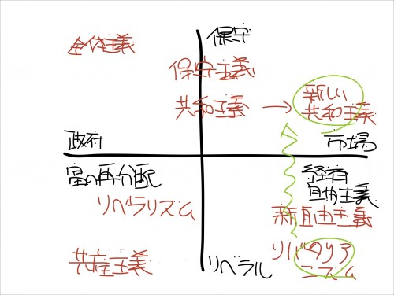

みんなの党の分裂について一言言っておくか。
執筆日時：
みんなの党の江田憲司前幹事長は８日の都内での講演で、同党を離党し、年内に新党を結成する方針を正式に表明した。「みんなの党はもう限界だ。自民党でも民主党でもない国民本位のまっとうな政党をつくる」と述べた。「政界再編で一強多弱の状態を打破する」とも語り、民主党や日本維新の会の一部を巻き込んだ野党勢力の結集を目指す考えも示した。
自分は結党当時からみんなの党を支持してきたが、それは脱官僚、地域主権、生活重視、小さな政府、活力重視、（日米同盟基軸）、脱原発という主張に賛同していたからだ。

図で言うと右下（とはいえリバタリアニズムにもそんなに心酔していないので、割と上方向になるが）を支持していて、割りとそれに近いことを言っていたのがみんなの党だった。最近で言えば維新の会も少し近いことを言っているが、彼らは自分たちの地方政策を実現するにおいて中央政府が分権的であればよい、分権的であるべきだと主張しているだけなので、その点で割りと違うと思う。
さてさて、話を戻そう。
自分はみんなの党を支持してきたが、それはなにも渡辺だの江田だのという個人のおっさんを支持していたのではない。むしろ、彼らに関しては割と胡散臭いと思っている。それでも自分がみんなの党を支持したのは、前掲の理念を共有する統合体としてであり、その実行できる期待しうる主体としてであった。その考えは、以前から変わらない。
たとえば、自分は投票するときに候補者の名前など見ない。党をもって信任する。それはなぜかというと、自分にはその候補者の資質などわからないし、よって信ずることもできないが、もし理念から逸脱した行動をとる議員がいれば党がその議員を罰し、タガにはめ、党としての統一性を維持しようとする点に置いては、政治家個人よりも比較的信じられるからだ。*1。
なので、このように分裂するような党、統一体としての存在を維持できない党には、もはやなにも期待しないし、できないだろう。よって今後投票することもない。そもそも、増税反対だの脱原発とか言い始めた時点から、かなりおかしくなっていたと思う。増税も原発もないにこしたことはないが、それで現実的にやっていけるのかが問題だと思う。政治理念の実行を期待しうる主体として信用することがだんだん難しくなってきたというのが、最近のみんなの党に対する正直な感想だ。
理念の実現体としての党に疑問を抱いていたところに統一性すらも保てなくなったとなれば、もはや政党として存在する意味もないだろう。好きに二分割でも三分割でもすればよい。渡辺も江田も主導権争いに熱中しているだけの話で、そんなものに票をくれてやるほど自分はお人好しではない。
もうひとつ。
江田陣営は、みな職を辞するべきだ。少なくとも、自分のように党を単位に選ぶ有権者がいることは知っておくべきで、個人として信任されていると考えているのならば大きな間違いだと知ってほしい。とくに、比例代表制度で議席を得た議員に関してはまさしく党に所属しているがゆえに議席を得たのだから、当然それを返上すべきであろう。江田は新しい党の長としてそれを実行すべきだ（そうすればちょっと見直すかもしれない）。一方、党を割る事態を招いた渡辺に関しても、代表の地位を返上すべきだろう。近年、個人的影響重視するあまり党の政治理念と統一性を損なったのは確かだと思う。
*1:地方選挙に置いてはその限りではない